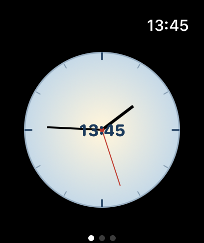
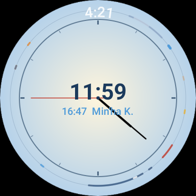
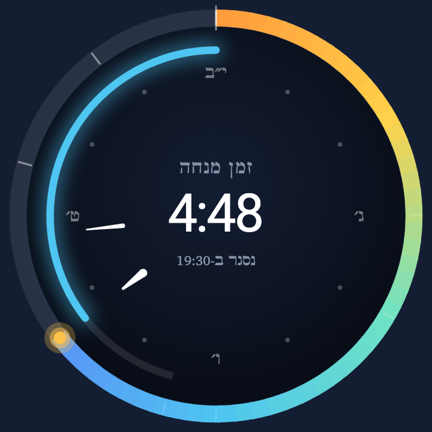
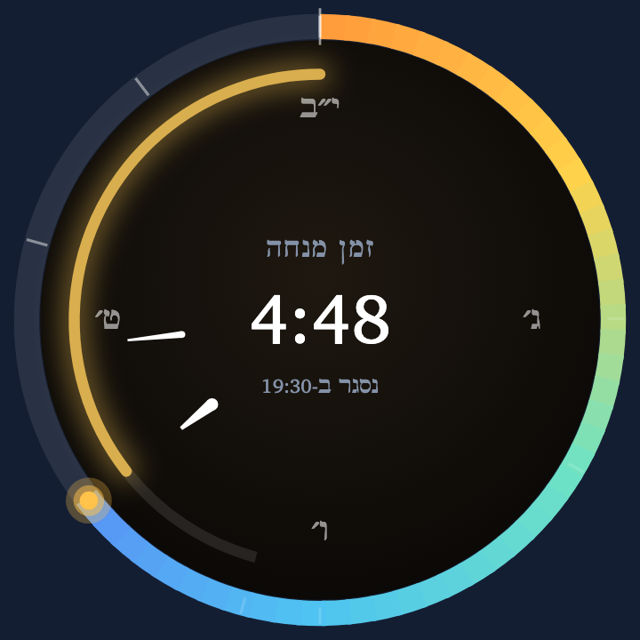
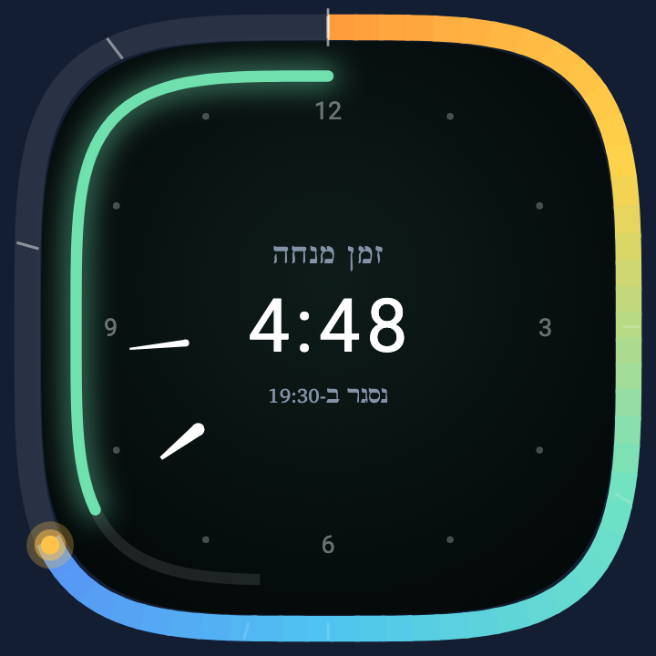
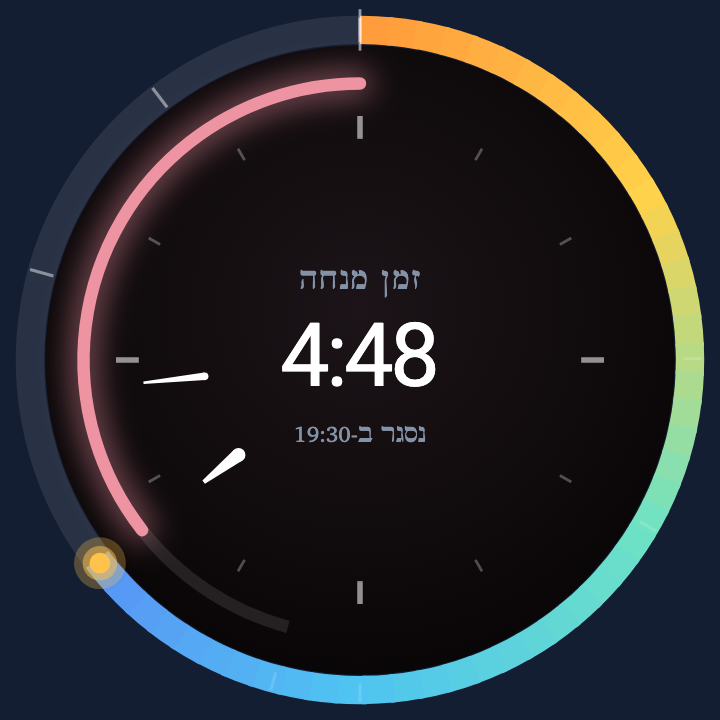
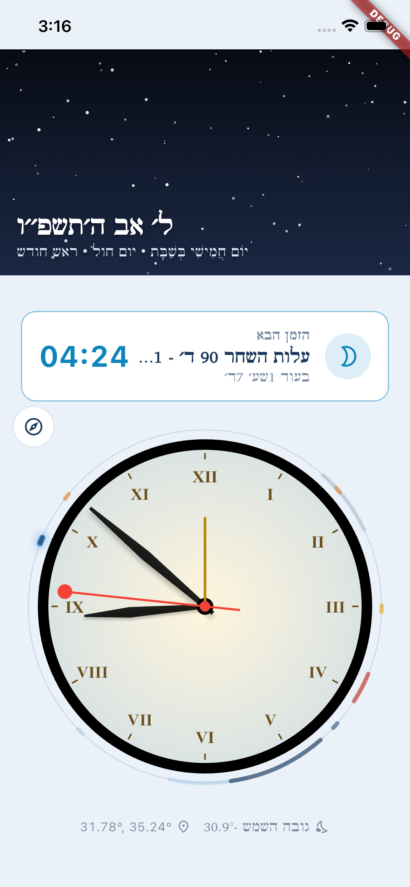
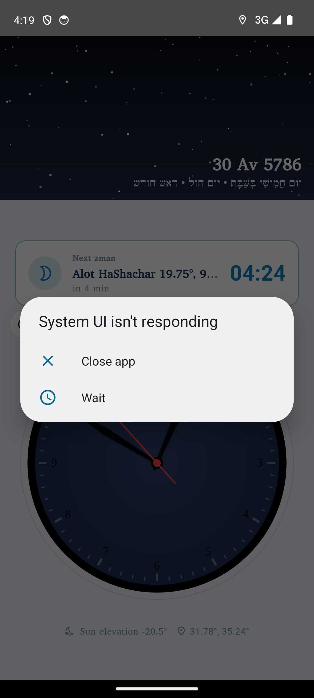

TIDHAR — les quatre projets
Horloges non linéaires tirées du brevet WO 2010/013230 « Nonlinear Timer ». Un tour de cadran = un cycle réel ; l'arc intérieur ne montre que la fenêtre en cours, et sa partie colorée est le temps qui reste. Chaque maquette contient le téléphone et la montre (la montre se trouve à côté du téléphone dans la maquette).
הַתָּדִיר — HaTidhar
zmanim · app native en coursLe seul produit avec du code natif (iPhone, Apple Watch, Android, Wear OS, TV). L'app web ci-dessous est compilée depuis le vrai code ; la maquette est la cible du design.
Les montres — app native


Les quatre cadrans du brevet — app native




Téléphones — app native


الأوقات — Al-Awqat
cinq prières · maquettePas encore de code natif : il sera dérivé de HaTidhar une fois celui-ci terminé.
Kairos
horloge biologique · maquettePas encore de code natif : il sera dérivé de HaTidhar une fois celui-ci terminé.
Sources
référencesLes écrans dessinés d'origine, dont les écrans de montre watchOS. Les références visuelles de tiers restent dans le dépôt privé.